|
Корсет
в свадебной моде
|
||
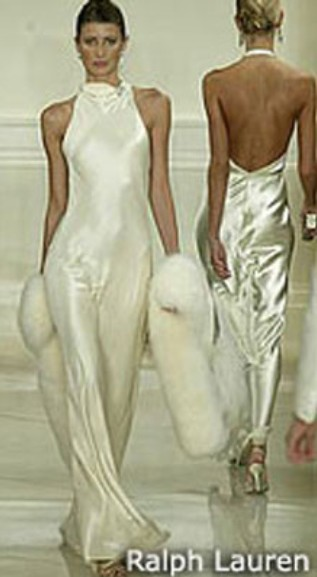 |
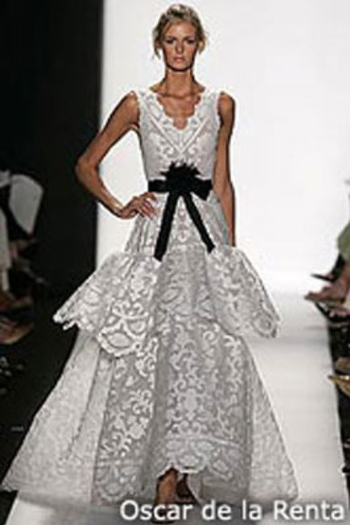 |
Каждая
женщина хочет, чтобы главный день в ее жизни был идеальным. Идеально должна
выглядеть и сама женщина: от кончиков волос до острых каблучков. Платье
должно быть не просто неподражаемым, а сногсшибательно роскошным. Высокая мода диктует свои правила, которые распространяются как на повседневную и вечернюю одежду, так и на свадебные наряды. Сейчас в моде женственные и романтичные силуэты, простого кроя из натуральных тканей. Так, Ralph Lauren одел свою невесту в струящийся наряд из воздушного шелка и легкого атласа с легкомысленными оборками. Chloe и Lacroix , напротив, представили классические, элегантные, роскошные наряды для скромных невест. Некоторые дизайнерыпродолжают использовать изящные А-силуэты (Reem Acra), они все же постепенно выходят из моды, уступая место нарядам облегающим тело словно вторая кожа. |
| Очень
часто в качестве отделки свадебных платьях используются
бусинки, перья, бисер и стразы. Ими
украшают лифы, края рукавов, верхний слой юбки. Дизайнеры предлагают использовать
полупрозрачное и невесомое кружево, как в основной материал платья, так
и как дополнение. Например, в коллекции Oscar de la Renta весна-лето 2005 кружево играет главную роль, поскольку оно изящно подчеркивает фигуру. Одной из самых популярных тенденций становится вышивка бисером или золотой/серебряной нитью, причем достаточно часто используется игра с цветом. Самым популярным дизайнером этого направления является лучший ученик великого кутюрье Кристобаля Баленсьяга Lazaro. |
||
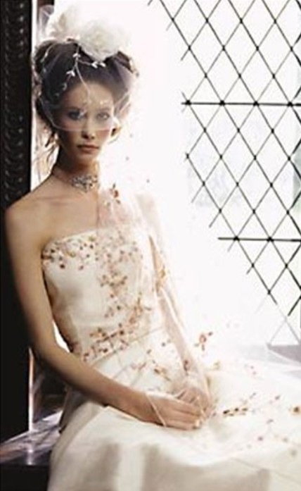 |
В
центре внимания дизайнеров легкие воздушные материалы,
драматическая драпировка, открытое тело (вариант для самых смелых - мини
или прозрачные длинные юбки), мех, античные
силуэты, экзотика (например, традиционные шелковые японские пояса в коллекции
Vera Wang). Кружево вновь завоевывает сердца свадебных модельеров. Это могут быть кружевные корсетные топы (как в коллекции Michelle Roth), и легкие кружевные вставки. Однако наибольшей популярностью пользуются платья целиком сделанные из этого поистине королевского материала. Но это не кружево вашей бабушки, а современный, очень стильный материал, с которым Дома Моды Monique Lhuillier и Christos творят настоящие чудеса. Также не менее востребована такая ткань, как фатин. Большей популярностью пользуется атлас, тафта, органза, сжатый капрон. |
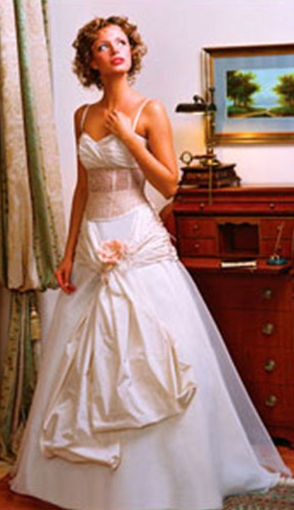 |
|
Модель
из коллекции Lazaro
|
| 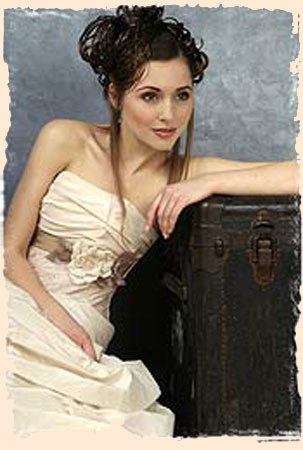 |
Корсет
был и остаеся быть самым популярным элементом свадебного
платья. Они могут быть классические - длиной чуть ниже талии или наоборот удлиненные, утягивающие живот и ягодицы, Какая девушка не представляла себя умело подчеркивающем достоинства фигуры и скрывающем недостатки. По форме корсеты самые разнообразные - с глубоким декольте, ассиметричным вырезом, с обной или двумя бретелями и т.д. |
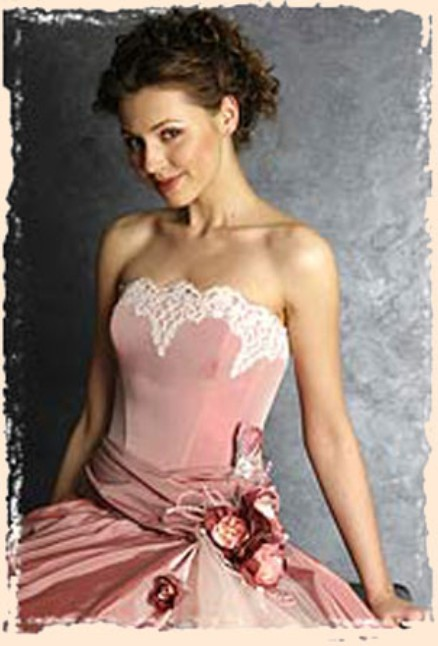 |
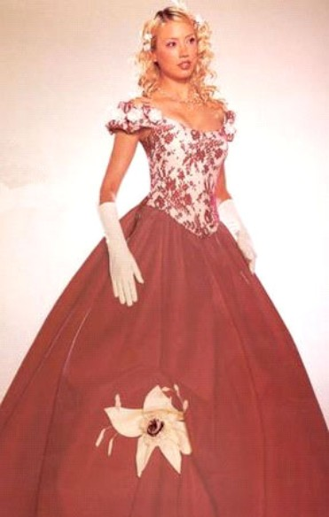 |
Цветовая палитра настолько многообразна, что можно экспериментировать со всевозможными оттенками. В этом сезоне в моду вновь вернулся классический белый и цвет слоновой кости. Большинство производителей предлагают платья цвета шампанского или нежно-розовых оттенков, а также более ярких цветов: красного, насыщенного голубого, изумрудного. |
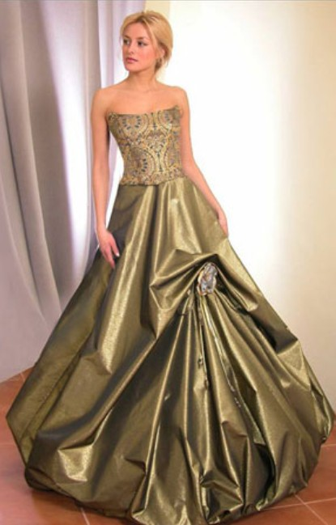 |
|
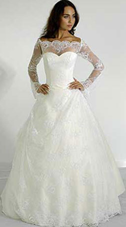 |
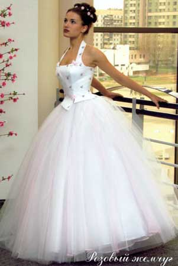 |
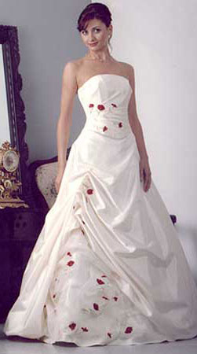 |
|
Вопросы
для самопроверки
|
||
| 1.
Какие основные тенденции в свадебной моде? 2. Какие корсеты используются в свадебных платьях? 3. Какая отделка корсетов характерна для свадебных платьев? |
||